The last module used ggplot2 to make quick plots that helped us see the data. This module builds on that toward plots that ease our own interpretation or communicate clearly to someone else. We stay with the same ggplot2 package, but we add more of its functions to map several variables at once, layer geoms, add trend lines and reference lines, split a plot into small panels, control color and axes, and labeling everything so a reader can understand the plot without us standing next to them.
ggplot2 extended
Every ggplot is built from layers and they can be added one at a time. In the last module we used the first few. Here is the fuller set, roughly in the order you may tend to add them. Importantly, every layer is not needed for every plot. A quick look might use only data, aesthetics, and a geom. A finished plot for a report can use more of them.
Table 1: The layers of a ggplot.
Layer
What it controls
Example
Data
The tibble being plotted
ggplot(data, ...)
Aesthetics
Which columns map to which visual properties
aes(x = , y = , color = )
Geoms
The shapes drawn
geom_point(), geom_line()
Stats
Stats a geom calculates before drawing
binning, smoothing
Scales
How values map to color, size, and axis positions
scale_color
Facets
Splitting the plot into panels by group
facet_wrap(~ group)
Coordinates
The plotting area and how it is viewed
coord_cartesian()
Theme
The overall look. Fonts, gridlines, legend
theme_minimal()
Labels
Titles, axis labels, and captions
labs(title = )
Building with + and |>
By now you have used two operators that both chain steps together, and it is worth being clear about when each one applies. Mixing them up is a common early error.
The pipe |> moves data from one dplyr verb to the next. It reads as “and then”. Example: “Take the data, and then filter, and then summarize”.
The plus + adds a layer to a ggplot. It reads as “and also”. Example: “Start the plot, and also add points, and also add a trend line, and also add labels”
The two often appear together. You pipe data into ggplot() with |>, and from there you build the plot with +.
admissions|># pipe the data in with |>filter(APPLCN>30000)|># dplyr steps use |>ggplot(aes(x =APPLCN, y =ADMSSN))+# switch to + once inside ggplotgeom_point(alpha =0.4)# add layers with +
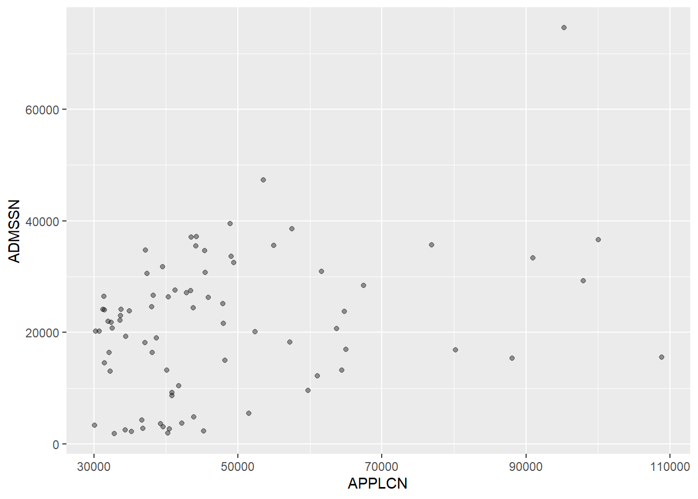
Mapping versus setting
The distinction between mapping and setting is important to understanding ggplot. To see it, we start with a plain plot and add color to it two different ways.
Here is a scatter with no color specified. Every point is ggplot’s default black.
ggplot(admissions, aes(x =APPLCN, y =ADMSSN))+geom_point(alpha =0.2)
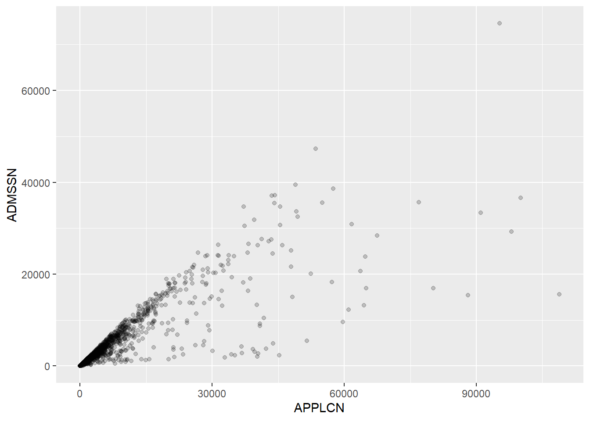
Mapping color to a variable
To map an aesthetic means to connect it to a column so it varies with the data. Mapping goes insideaes(). Here we map color to whether an institution requires an admissions test, so the points take on different colors by group and a legend appears to explain them.
ggplot(admissions, aes(x =APPLCN, y =ADMSSN, color =adm_tscores))+geom_point(alpha =0.4)
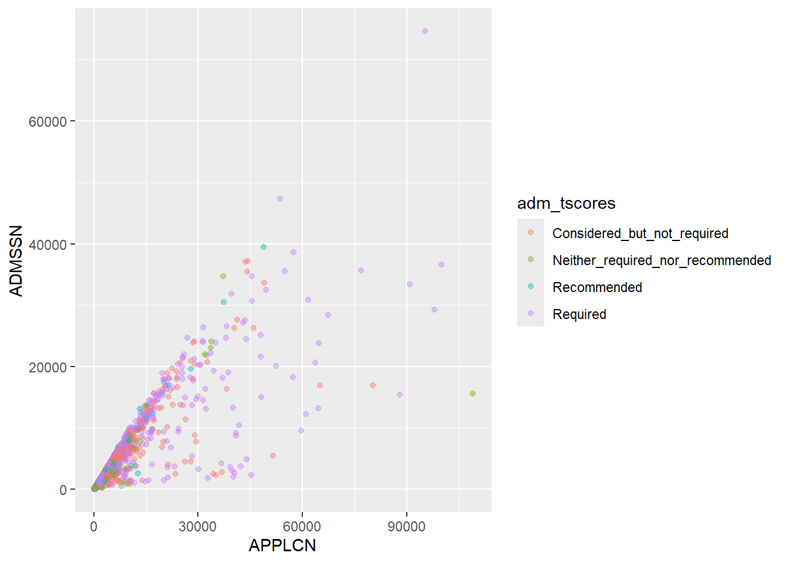
The color now carries information, showing a third variable on top of the two on the axes. ggplot chose the colors and built the legend for us because we mapped color to a column.
Setting a constant color
To set an aesthetic means to fix it to one value that is the same for every point. Setting goes outsideaes(), as an argument to the geom. Here every point is the same blue, and no legend appears because the color carries no information about the data.
ggplot(admissions, aes(x =APPLCN, y =ADMSSN))+geom_point(alpha =0.4, color ="#799BA6")
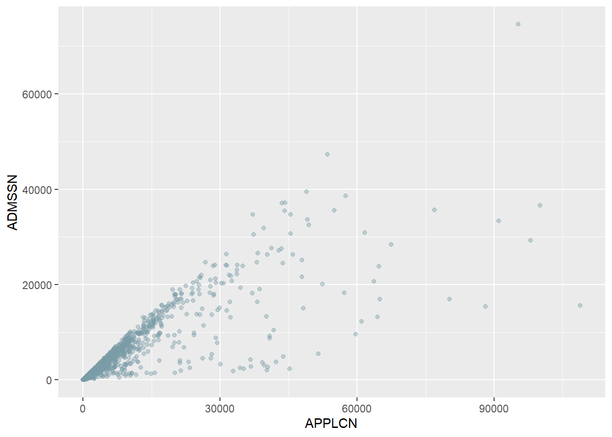
In summary, if a visual property should change with the data, map it inside aes(). If it should be constant, set it outside aes() in the geom.
One related trap is worth seeing. If you put a constant insideaes(), it does not do what you might expect.
ggplot(admissions, aes(x =APPLCN, y =ADMSSN))+geom_point(aes(color ="blue"))
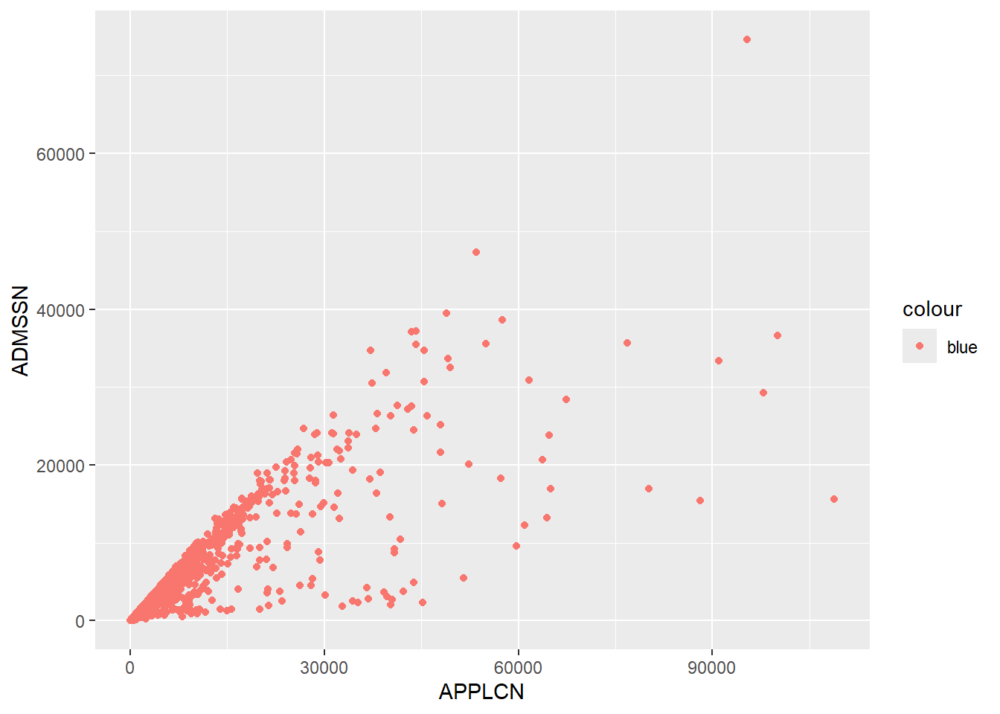
The points did not turn blue. Because color = "blue" sits inside aes(), ggplot treated the word “blue” as a category to map, gave it its own color, and added a legend labeled “blue”. This is the classic sign that a constant ended up inside aes() by mistake.
Global and local aesthetics
There is one more piece to where aes() goes. Aesthetics can live in two places, and the location decides which geoms they affect.
Global
An aesthetic placed inside ggplot() is global. Every geom in the plot inherits it. Here both the points and the smooth trend line are colored by group, because color is mapped globally.
ggplot(admissions, aes(x =APPLCN, y =ADMSSN, color =adm_tscores))+geom_point(alpha =0.4)+geom_smooth(se =FALSE)
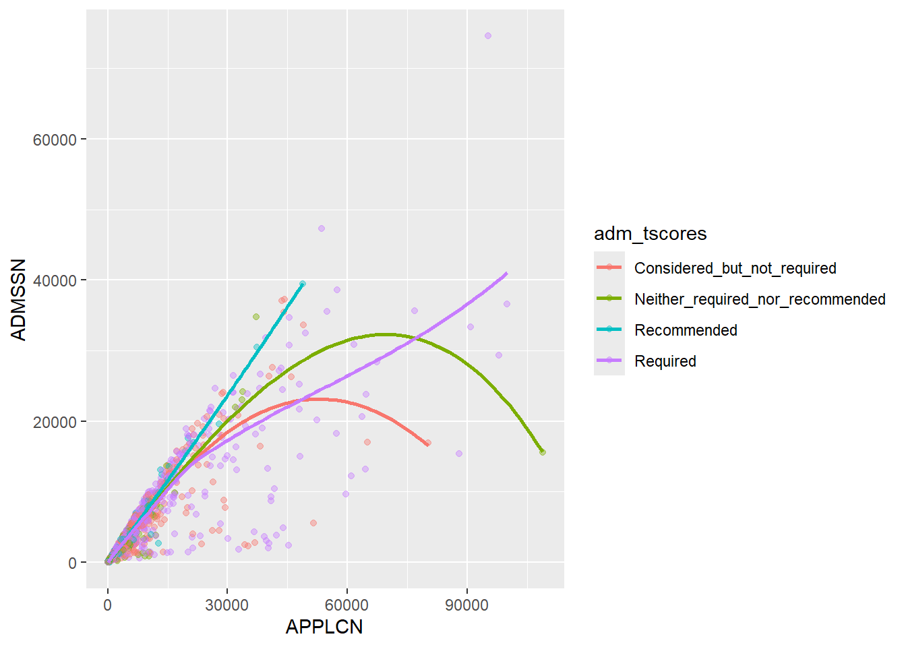
Local
An aesthetic placed inside a single geom is local. Only that geom uses it. Here color is mapped only inside geom_point(), so the points are colored by group but the single smooth line is not, because it did not inherit the color mapping.
ggplot(admissions, aes(x =APPLCN, y =ADMSSN))+geom_point(aes(color =adm_tscores), alpha =0.4)+geom_smooth(se =FALSE)
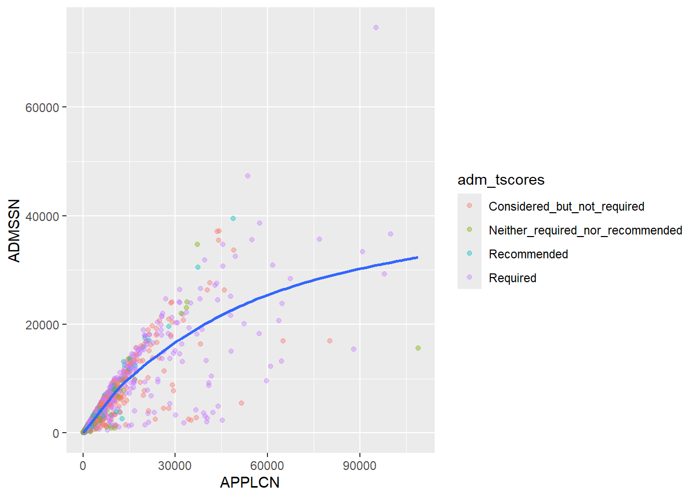
The difference is visible in the trend lines. Global color gives one line per group, while local color leaves a single line over all the data. Deciding whether an aesthetic is global or local is how you control which parts of a plot respond to it.
Building up a richer plot
So far we have mapped a single variable to color and seen how mapping and setting differ. From here we add more to a plot a piece at a time. Each addition is another layer joined with +. We will keep working with the admissions data and grow one plot as we go, so you can see each layer’s effect on its own.
Adding a shape dimension
Color is one aesthetic, and a plot can map more than one at a time. Shape is another. It draws each group’s points with a different symbol, such as circles, triangles, and squares. Mapping shape works just like mapping color, inside aes().
Here we map both color and shape to the same variable, the admissions test policy. Each group now differs in two ways at once, which can make groups easier to tell apart, and it helps a reader who cannot rely on color alone.
ggplot(admissions, aes(x =APPLCN, y =ADMSSN, color =adm_tscores, shape =adm_tscores))+geom_point(alpha =0.5)
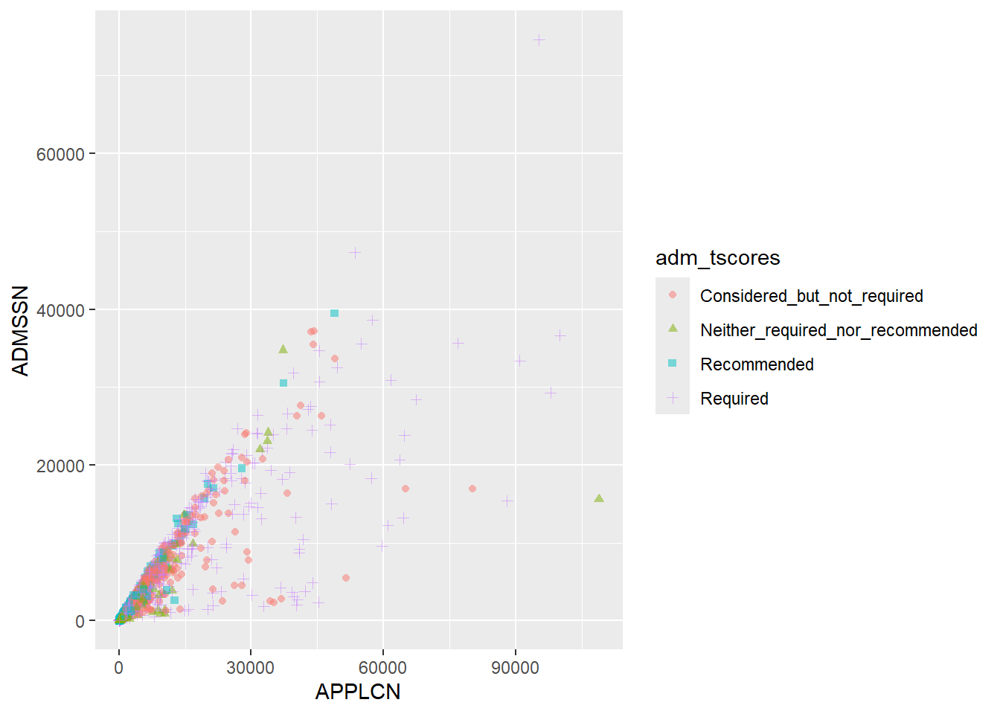
The legend now shows both a color and a symbol for each group, since both aesthetics carry the same information.
Shape can also carry a different variable than color, letting one plot show more of the data at once. This is powerful, but it comes with a caution. The more a plot tries to show, the harder it can be to read. Being able to add another aesthetic does not always mean we should.
ggplot(admissions, aes(x =APPLCN, y =ADMSSN, color =adm_tscores, shape =hs_gpa))+geom_point(alpha =0.5)
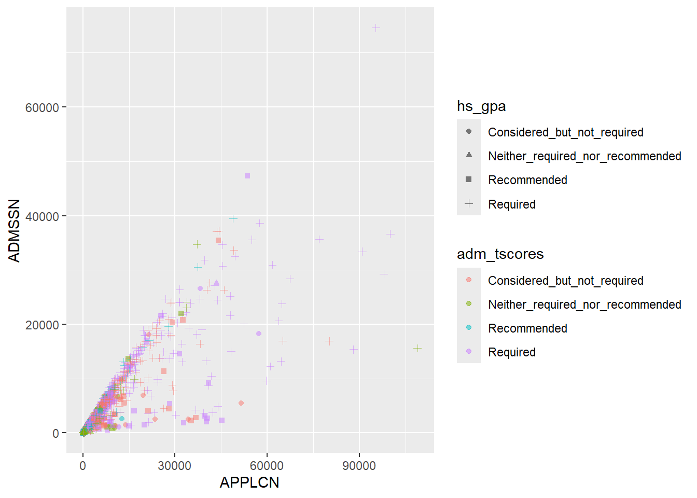
Here color shows the test policy and shape shows the high-school-GPA policy, so the plot carries four variables at once: two on the axes and two in the aesthetics. That is a lot to take in. A plot like this can be worth the density when a reader needs all of it, but often a cleaner plot that shows less communicates more.
Zooming in on a range
Sometimes the interesting data sits in one part of the plot. Zooming into a a range can be helpful to examine and highlight them. There are two ways to zoom in ggplot2, and they behave differently in a way worth understanding.
Approach 1: coord_cartesian() for true zoom
coord_cartesian() sets the viewing window without changing the data. Points outside the window are simply off screen, but they are still there and still used in any calculation. This is a ‘true zoom’, like moving a magnifying glass over the plot.
ggplot(admissions, aes(x =APPLCN, y =ADMSSN, color =adm_tscores, shape =adm_tscores))+geom_point(alpha =0.6)+coord_cartesian(xlim =c(0, 25), ylim =c(0, 25))
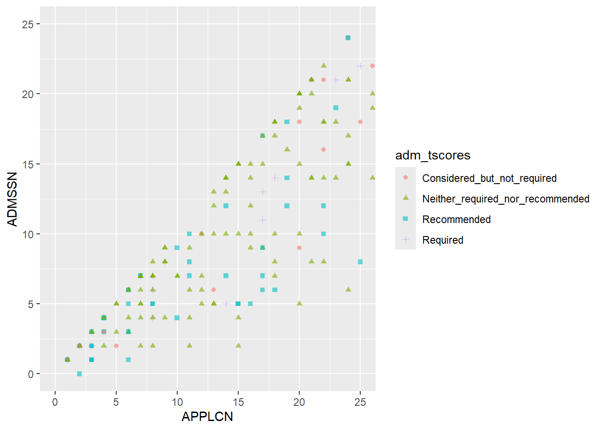
Now the crowded region opens up. With fewer points overlapping, the colors and shapes do some explanatory work.This view sits at the very base of the full plot, the corner of the smallest institutions, where both applications and admissions are low. These are the many small schools that were packed into the bottom-left corner and invisible before we zoomed in.
Approach 2: scale limits, which drop data
Setting limits through the scales, with xlim() or scale_x_continuous(limits = ...), looks similar but does something different. It removes any data outside the limits before the plot is drawn. The points beyond the range are not hidden, they are dropped, and anything computed from the data is recomputed on only what remains.
ggplot(admissions, aes(x =APPLCN, y =ADMSSN, color =adm_tscores, shape =adm_tscores))+geom_point(alpha =0.6)+geom_smooth(aes(group =1), se =FALSE, color ="#C7522A")+xlim(0, 25)+ylim(0, 25)
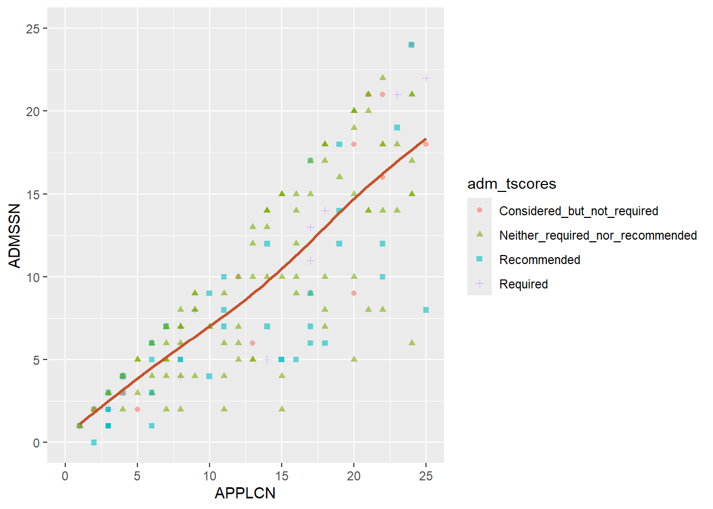
Here we added a trend line to make the difference visible. Because the large institutions were removed before the line was fit, this line describes only the smaller institutions in the range, not the full dataset. You may also see a warning that rows were removed, which is ggplot telling you that data was dropped.
Which to use
The two look alike but answer different questions. Use coord_cartesian() when you want to look closely at part of the data while keeping every point and every calculation intact. Use scale limits when you genuinely want to exclude the data.
Labeling the plot
So far the plot uses the raw column names for its axes, like APPLCN and ADMSSN, which a reader outside the data may not understand. The labs() layer sets readable labels for axis titles, plot titles, and captions. A useful habit is to put the plot’s main takeaway in the subtitle, so a reader gets the point that you are trying to make.
ggplot(admissions, aes(x =APPLCN, y =ADMSSN, color =adm_tscores, shape =adm_tscores))+geom_point(alpha =0.6)+coord_cartesian(xlim =c(0, 25), ylim =c(0, 25))+labs( title ="Applications and admissions at the smallest institutions", subtitle ="Among the smallest schools, admissions rise closely with applications", x ="Applications received", y ="Students admitted", color ="Test policy", shape ="Test policy")
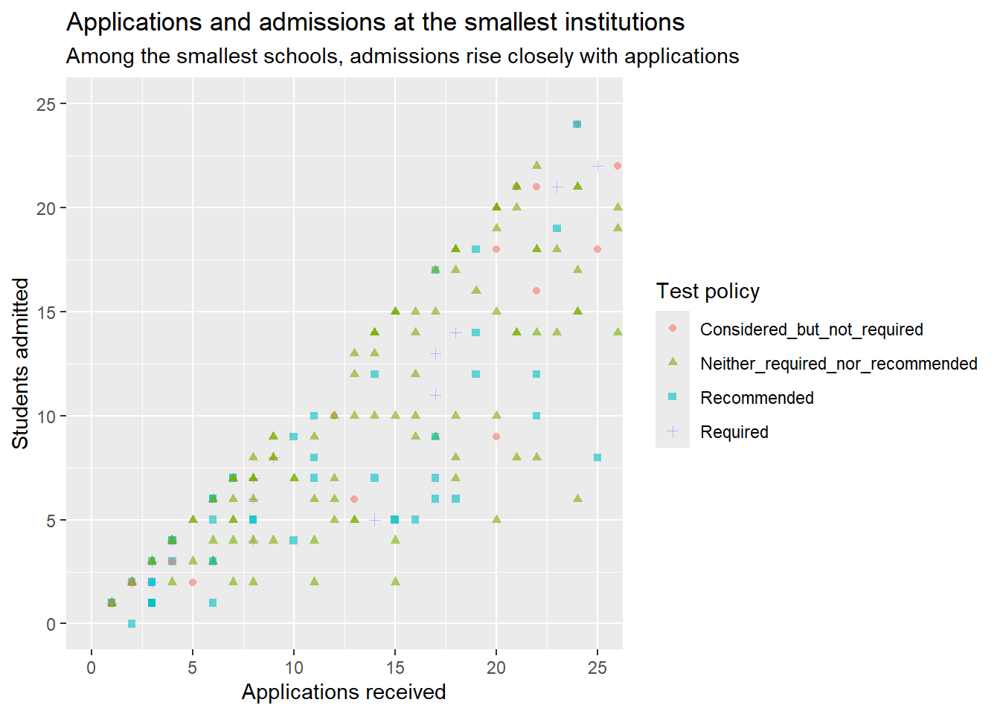
The axes now read plainly, the title says what the plot is about, and the subtitle states the takeaway. Setting both color and shape labels to the same text also cleans up the legend, giving it one clear heading instead of the column name.
Cleaning up the look with a theme
The default gray panel background is fine for quick looks, but a white background often reads better in a report. A theme controls the overall look of the plot: the background, the gridlines, the fonts. ggplot2 comes with several ready-made themes, and theme_minimal() gives a clean white background with light gridlines.
ggplot(admissions, aes(x =APPLCN, y =ADMSSN, color =adm_tscores, shape =adm_tscores))+geom_point()+coord_cartesian(xlim =c(0, 25), ylim =c(0, 25))+labs( title ="Applications and admissions at the smallest institutions", subtitle ="Among the smallest schools, admissions rise closely with applications", x ="Applications received", y ="Students admitted", color ="Test policy", shape ="Test policy")+theme_minimal()
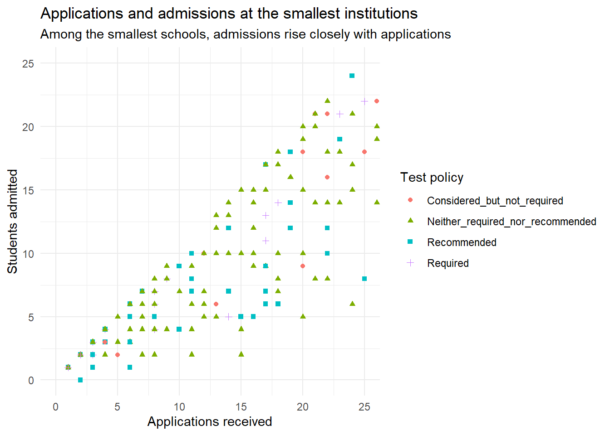
The gray panel is gone, replaced by a clean white background that puts the focus on the points. This is the same plot as before, just easier to read, and it is starting to look like something you could drop into a report.
Adjusting size and text
Two things can still be improved. The points are small, which makes the shapes hard to tell apart, and the default text is a little small for a report. We can fix both.
Point size is set in the geom, outside aes(), because we want every point the same larger size. We add size = 2.5 to geom_point().
Text sizes are controlled in the theme() layer. While theme_minimal() sets the overall look, theme() lets us adjust individual pieces, such as the size of the title, the axis labels, and the axis numbers. We add a theme() after theme_minimal() so our changes build on top of it.
ggplot(admissions, aes(x =APPLCN, y =ADMSSN, color =adm_tscores, shape =adm_tscores))+geom_point(alpha =0.7, size =3.5)+coord_cartesian(xlim =c(0, 25), ylim =c(0, 25))+labs( title ="Applications and admissions at the smallest institutions", subtitle ="Among the smallest schools, admissions rise closely with applications", x ="Applications received", y ="Students admitted", color ="Test policy", shape ="Test policy")+theme_minimal()+theme( plot.title =element_text(size =16, face ="bold"), plot.subtitle =element_text(size =12), axis.title =element_text(size =12), axis.text =element_text(size =10))
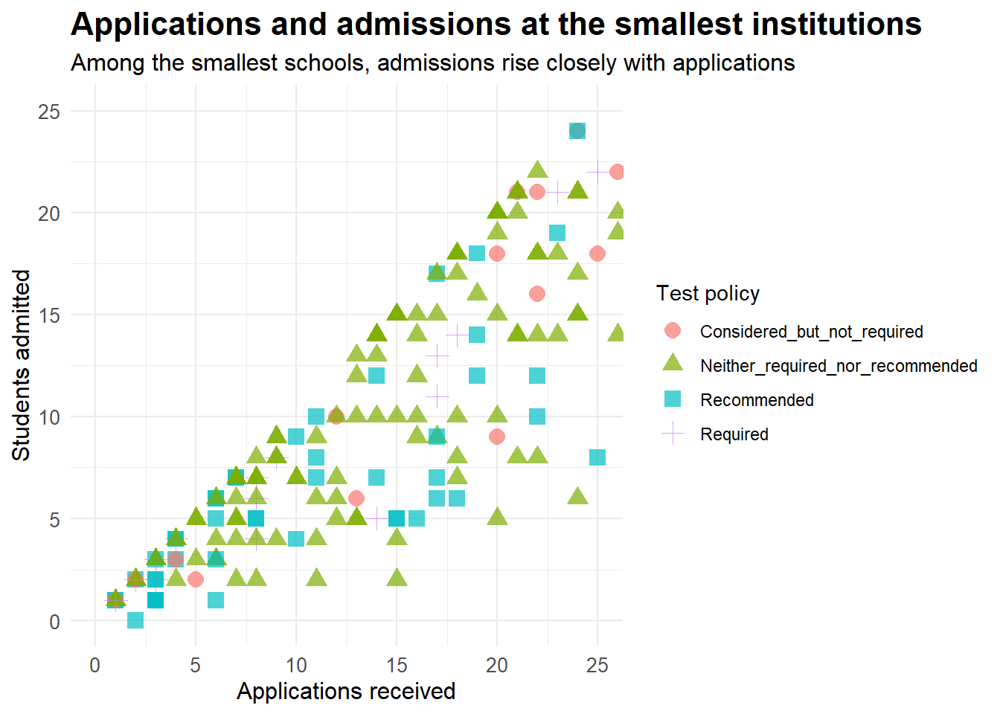
The larger points make the shapes easy to distinguish, and the text now sizes sensibly for a report. Notice the pattern inside theme(): each element of the plot has a name, such as plot.title or axis.text, and we adjust it with element_text(), which controls text properties like size and whether it is bold. This is how ggplot2 gives fine control over nearly every part of a plot’s appearance.